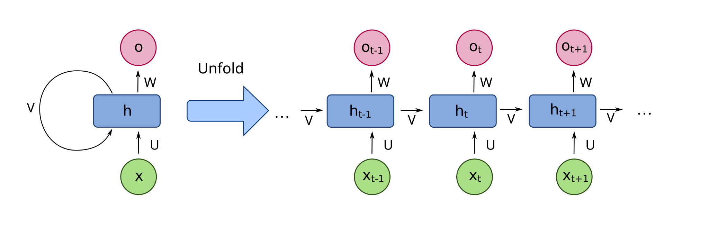
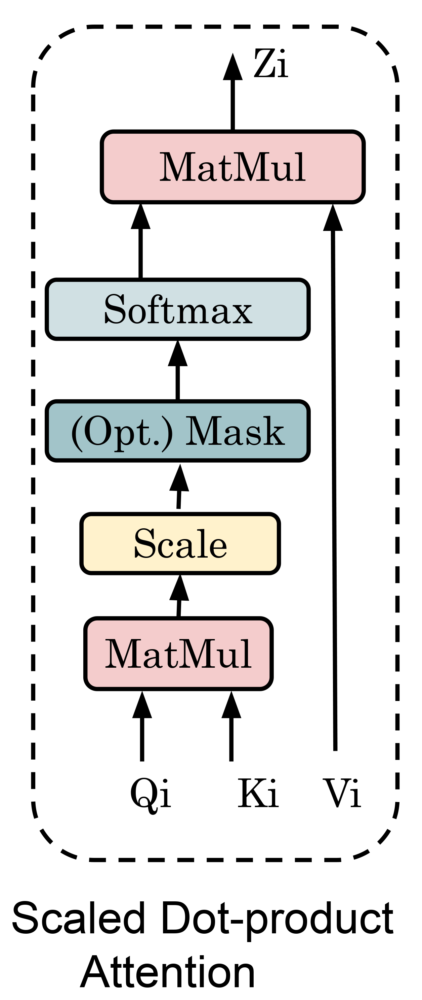
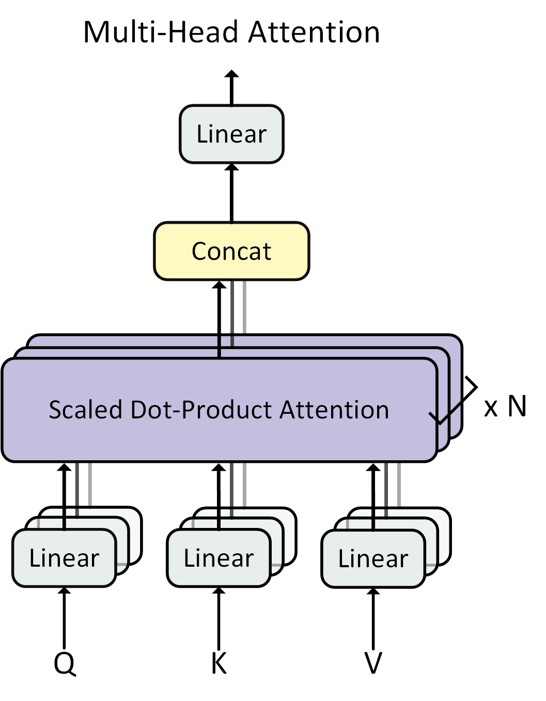

Large Language Models
How this paper will be set. No LLM paper exists yet (it is a new elective), so the expected paper uses the department's 5 × (a/b) format. Q1–Q3 come from Unit 1 (CO1: transformer and attention; CO2: data, optimisation, compute) and Q4–Q5 from Unit 2 (CO3: NLU/NLG, chatbots, translation, summarisation). The professor's slides end each unit with self-check questions. These are the most reliable guide to what will be asked, and every one is answered below.
New to machine learning? Start with Unit 0: Machine Learning from Zero just below. It assumes you know nothing about AI and builds every idea from scratch using everyday examples. Then, in every topic, read the Starting from zero box first. It explains the topic in plain words before the exam-level material begins.
Machine Learning from Zero
No maths or coding background needed. Everything the LLM units rely on, built up one small step at a time.
Not a syllabus unit by itself, but every idea here (parameters, training, loss, neurons, probabilities, vectors, GPUs) appears in Units 1 and 2 and in exam answers. Read it once slowly. It takes about 40 minutes.
Step 0.1What does it mean for a computer to "learn"?
A computer is very fast and very obedient, but it has no common sense. On its own it does exactly what it is told, nothing more.
The old way: rules written by a person. Suppose you want a program that says whether an email is spam. The old way is to sit down and write rules: "if the email contains the word 'lottery', call it spam", "if it says 'you have won ₹10 lakh', call it spam". This works a little, but spammers change their wording, you need thousands of rules, and you will always miss some.
The new way: learning from examples. Instead of writing rules, you collect examples: 10,000 emails that people have already marked "spam" or "not spam". You give these to the computer and let it work out the rules by itself: which words, patterns and senders usually mean spam. That is machine learning (ML): the computer finds the rules from examples instead of a person writing them.
A child learns what a "dog" is by seeing many dogs, not by being given a definition. Machine learning works the same way: show enough examples and the computer picks up the pattern.
A Large Language Model (LLM) like ChatGPT is a machine-learning model that learned the patterns of human language by reading an enormous amount of text.
Step 0.2Computers only understand numbers
Deep inside, a computer can only store and calculate with numbers. It has no idea what the word "cat" means. So anything we want a computer to learn from (words, pictures, sounds) must first be turned into numbers.
- A photo is already numbers: each tiny dot (pixel) is stored as how red, green and blue it is, e.g. (255, 200, 0).
- A letter has a code number: in the ASCII code, "A" = 65, "B" = 66.
- A word can be given an ID number from a dictionary: "cat" = 3797, "sat" = 3332. LLMs do exactly this. The pieces of text they number are called tokens (Unit 1 explains them).
An ID number alone doesn't carry meaning (3797 is not "closer" to "kitten" than to "car"). Step 0.7 shows the smarter trick LLMs use: turning each word into a list of numbers that does carry meaning.
Step 0.3A model is a machine with knobs
Think of a model as a box. Numbers go in, the box does some arithmetic, and a number (the prediction) comes out. Inside the box are knobs that control the arithmetic. Turning the knobs changes the answers.
The simplest possible model. A fruit seller charges by weight. We want to predict the price from the weight:
This model has one knob. Knobs are officially called parameters or weights, and those words appear everywhere in the LLM units. A slightly bigger model might be price = w × weight + b. The extra knob b (called the bias) is a fixed amount added every time, like a ₹10 carry-bag charge.
The key point: a model is its knob settings. "Training a model" just means finding good knob settings. When people say "GPT-3 has 175 billion parameters", they mean it has 175 billion knobs, all of which were set automatically by learning.
Step 0.4How the knobs get set: guess, check, adjust
No person turns 175 billion knobs by hand. The computer sets them with a simple loop, repeated many times:
- Guess: use the current knob settings to make a prediction.
- Check: compare it with the correct answer. How wrong was it? This "wrongness score" is called the loss (or error). A bigger loss means a worse guess.
- Adjust: nudge each knob a little in the direction that would have made the guess less wrong.
Worked example. We know 2 kg of mangoes costs ₹200. We don't know the knob w, so we start with a bad guess, w = 50. Rule for adjusting: w goes up by 0.1 × error × weight.
| Round | Knob w | Guess for 2 kg | Error (200 − guess) | Loss (error²) |
|---|---|---|---|---|
| 1 | 50.0 | ₹100 | 100 | 10,000 |
| 2 | 70.0 | ₹140 | 60 | 3,600 |
| 3 | 82.0 | ₹164 | 36 | 1,296 |
| 4 | 89.2 | ₹178 | 21.6 | 467 |
| 5 | 93.5 | ₹187 | 13.0 | 168 |
| 6 | 96.1 | ₹192 | 7.8 | 61 |
| … | → 100 | → ₹200 | → 0 | → 0 |
Nobody told the computer "the answer is 100". It found it by guessing, checking and adjusting. The loss shrinks every round. This loop is all that "training" means, whether the model has 1 knob or 175 billion.
The hill-in-the-fog picture (gradient descent)
Imagine you are standing on a hilly field in thick fog and you want to reach the lowest point. You can't see far, but you can feel which way the ground slopes under your feet. So you take a step downhill, feel again, and take another step. Eventually you reach the bottom.
- Gradient = the slope under your feet: which direction is downhill for each knob, and how steep.
- Gradient descent = repeatedly stepping downhill. This is how every LLM is trained.
- Learning rate = the size of each step (0.1 in our mango rule). Too big and you jump over the valley; too small and you take forever.
- Backpropagation = the bookkeeping trick that works out the slope for all the knobs at once, working backwards from the error.
Step 0.5Neurons and neural networks
The price formula was too simple for language. We need a model that can learn very complicated patterns. The building block is a neuron. It is loosely inspired by brain cells, but really it is just a tiny calculator that weighs up evidence and decides.
Example: should I go to the cricket match? Three pieces of evidence, each 1 (yes) or 0 (no), each with a weight showing how much it matters:
That is all a neuron does: multiply each input by its weight, add them up, and pass the total through a switch (called the activation function) that decides how strongly to "fire". The weights are knobs, learned by the guess-check-adjust loop.
Why stack them? One neuron can only make a simple yes/no judgement. The first layer spots simple things, the next layer combines those into more complex things, and so on. In an image model: edges → shapes → eyes and ears → "cat". An LLM is a very deep neural network (GPT-3 has 96 big layers) of a special design called the Transformer (Unit 1, § 1.3).
Step 0.6Scores into percentages: probability and softmax
An LLM never "knows" the next word for sure. It gives every possible next word a score, and then turns the scores into probabilities: percentages that add up to 100%.
The turning-into-percentages step is called softmax. It does two things: (1) makes every score positive, using the special number e ≈ 2.718 raised to the power of the score; (2) divides each by the total so they add up to 100%.
Notice that softmax exaggerates the gaps: a score just 1 point higher becomes almost 3× more likely. The model then picks the next word from these percentages (Unit 1 calls this decoding).
Step 0.7Words as points on a map: vectors and embeddings
Back to the problem from Step 0.2: an ID number such as "cat = 3797" carries no meaning. The fix is to describe each word with a list of numbers, like coordinates on a map.
Imagine a map with two directions: "how much is it an animal?" (up) and "how big is it?" (right). Every word gets a location:
- A list of numbers like (1.5, 8.5) is called a vector. It is simply an arrow pointing to a spot on the map.
- The vector that represents a word is called its embedding. Nobody chooses these coordinates by hand: they are knobs, learned during training.
- Because similar words sit close together, the computer can now measure meaning: "cat" is near "kitten" and far from "bus".
- The dot product of two vectors measures how much two arrows point the same way: multiply matching numbers and add. (1, 2) · (3, 1) = 1×3 + 2×1 = 5. A big positive number means "similar direction", near zero means "unrelated". Attention in the Transformer (§ 1.3) is built on dot products.
Step 0.8Matrices and GPUs: doing millions of sums at once
Look back at the neuron: multiply inputs by weights and add them up. A layer has thousands of neurons all doing this to the same inputs at the same time. Writing all their weights in a table (rows × columns) gives a matrix, and doing all those weighted sums in one go is called matrix multiplication. That is the main operation inside an LLM, repeated billions of times.
Why GPUs? A normal processor (CPU) is like a few brilliant professors: they can do anything, but only a few things at a time. A GPU (graphics card, originally built for video games) is like thousands of school students who can each only do simple multiplication, all working at the same moment. Matrix multiplication is millions of simple multiply-and-add jobs that don't depend on each other, which is exactly the work thousands of students can split up. That is why AI runs on GPUs (and Google's similar chips called TPUs).
Step 0.9A few more ideas you'll meet
- Training vs inference. Training is the long, expensive learning phase (setting the knobs: weeks of GPU time). Inference is using the finished model (you typing a question and getting an answer). The knobs no longer change during inference.
- Supervised learning. Learning from examples that come with correct answers attached by people (emails labelled spam or not spam).
- Self-supervised learning. The data provides its own answers. Take any sentence, hide the last word, and ask the model to guess it. The real text is the answer key. This is why LLMs can learn from the whole internet without anyone labelling anything.
- Overfitting. A student who memorises last year's answers word for word, then fails when the questions change slightly. A model can do the same: perfect on its training examples, poor on new ones. We want understanding of patterns, not memorisation.
- Dataset, epoch, batch. The dataset is all the examples. A batch is a small handful processed together in one guess-check-adjust round. An epoch is one full pass through the whole dataset.
Step 0.10Putting it together: what an LLM is
You now have every piece. Here is a whole LLM in plain words:
- Take a huge amount of text from the internet, books and code. Chop it into small pieces called tokens and give each an ID number (Step 0.2).
- Turn each token into a list of numbers, its embedding, a location on a meaning map (Step 0.7).
- Pass these through a very deep neural network (Step 0.5) of a special design called the Transformer, which lets every word look at every other word to work out the context.
- At the end, give every possible next token a score, and turn the scores into percentages with softmax (Step 0.6).
- Training: hide the next word in real text, let the model guess, measure how wrong it was (loss), and nudge all the billions of knobs a little downhill (gradient descent, Step 0.4). Repeat trillions of times on thousands of GPUs (Step 0.8).
- Using it: give it your question; it predicts one word, adds it on, predicts the next, and so on until the answer is complete.
An LLM is the world's most thoroughly trained "guess the next word" player. It has practised on so much text that, to predict the next word well, it had to absorb grammar, facts, reasoning patterns and writing styles along the way.
Word bank: every term in plain English
| Term | Plain meaning |
|---|---|
| Model | The learned "rule machine": a formula plus its knob settings |
| Parameter / weight | One knob inside the model; learned, not hand-set |
| Bias | A knob that adds a fixed amount (like a flat carry-bag charge) |
| Training | Setting the knobs by repeated guess → check → adjust |
| Inference | Using the finished model to get answers |
| Loss | A score of how wrong the model's guess was (lower is better) |
| Gradient | Which direction to turn each knob to reduce the loss (the downhill slope) |
| Gradient descent | Walking downhill step by step to the lowest loss |
| Learning rate | How big each step is |
| Backpropagation | The method for computing every knob's slope, working backwards from the error |
| Neuron | A tiny calculator: weighted sum of inputs, then an on/off-ish switch |
| Activation function | That switch (e.g. ReLU: "if negative, output 0") |
| Layer | A row of neurons working side by side |
| Neural network / deep learning | Many layers stacked; "deep" = many layers |
| Vector | A list of numbers; an arrow to a point on a map |
| Embedding | The learned vector that represents a word's meaning |
| Dot product | Multiply matching numbers of two vectors and add: measures similarity |
| Matrix | A table of numbers (e.g. all of a layer's weights) |
| Softmax | Turns raw scores into percentages that add up to 100% |
| Probability | How likely something is, from 0 (never) to 1 (certain) |
| Token | A small piece of text (a word or part of a word) with an ID number |
| Dataset / batch / epoch | All examples / a small handful at a time / one full pass through all of them |
| Supervised / self-supervised | Answers labelled by people / answers hidden inside the data itself |
| Overfitting | Memorising the training examples instead of learning the pattern |
| GPU / TPU | Chips with thousands of simple calculators that work at once |
Flashcards · Unit Zero
If you can answer these in your own words, you're ready for Unit 1.
Foundations & Training of LLMs
From counting words to the Transformer, and the data, optimisation and hardware needed to train one.
Syllabus: overview of LLMs · evolution from early models · transformer architecture · attention mechanisms · data requirements & preprocessing · optimisation techniques & training challenges · hardware & computation resources
§ 1.1Overview: What Is a (Large) Language Model?
You already use a tiny language model every day: the word suggestions above your phone keyboard. Type "Happy" and it suggests "birthday". It has seen that pattern many times, so it guesses the most likely next word.
A language model is exactly that: a program that, given some words, guesses what comes next and how likely each option is. For "The cat sat on the ___" it might say: mat 62%, floor 18%, roof 9%, idea 1%.
A Large Language Model is the same idea made enormous in three ways:
- More knobs: billions of adjustable numbers (Unit 0, Step 0.3) instead of a handful.
- More reading: it has practised on a large share of the text on the internet.
- More computing power: thousands of GPUs running for weeks.
How does "guess the next word" become a chatbot that writes essays? Repeat it. Guess one word, stick it on the end, guess the next, and keep going. A whole answer is just many next-word guesses in a row. To be very good at guessing the next word in any text (recipes, legal documents, Python code, poems), the model has to pick up grammar, facts and reasoning along the way.
Tokens: the model doesn't really read whole words. It reads pieces of words, like Lego bricks. "Unbelievable" becomes "Un" + "believ" + "able". Any word, even one it has never seen, can be built from familiar pieces.
Choosing the next word (decoding): should it always pick the top suggestion? If it does, the writing becomes boring and repetitive. So there is a temperature dial. Low temperature means "play it safe, pick the most likely word". High temperature means "be adventurous, sometimes pick less likely words", which is more creative but also more likely to go wrong.
Now the exam version ↓
P(w₁ … wₙ) = ∏ P(wᵢ | w₁ … wᵢ₋₁)Given "The cat sat on the ___", the model scores every possible next word (mat 0.62, floor 0.18, roof 0.09, idea 0.01) and the most probable is "mat". Everything an LLM does is built from this one skill, repeated.
| Dimension | Scale | Example |
|---|---|---|
| Parameters | Billions of learnable weights (~10⁵× early neural LMs) | GPT-3: 175 billion |
| Training data | Hundreds of billions to trillions of tokens | GPT-3: 300B+ tokens (web, books, code, papers) |
| Compute | Thousands of GPU-years | GPT-3: ~3,640 petaflop/s-days ≈ 3.15 × 10²³ FLOPs |
Scale unlocks new behaviour, but also drives cost, energy and complexity (Units 4–5).
Tokens: models read tokens (whole words, sub-words or characters) mapped to integer IDs, not words. "Unbelievable!" → Un | believ | able | !. Rare words split into familiar pieces, so the vocabulary stays finite. Rule of thumb: 1 token ≈ 0.75 English words (1,000 tokens ≈ 750 words). The context window is the maximum number of tokens processed at once (4K–128K and beyond).
The autoregressive loop: read the tokens so far → predict a probability for every token in the vocabulary → pick one → append it → repeat. Translation, summarisation, QA and code generation are all framed as "predict the next token". Train one simple objective at enormous scale and a general-purpose text engine emerges.
| Decoding strategy | How it picks the next token | Character |
|---|---|---|
| Greedy | Always the single most likely token | Fast but repetitive and dull |
| Beam search | Tracks several (k) high-probability sequences | Good for translation; less creative |
| Top-k sampling | Sample from the k most likely tokens | Controlled randomness |
| Top-p (nucleus) | Sample from the smallest set whose probabilities sum to p | Most common for open-ended text |
Temperature T rescales logits before softmax (pᵢ ∝ e^{zᵢ/T}). Low T (→0) gives safe, focused output close to greedy. High T (>1) gives diverse, surprising and riskier output.
One model, many tasks: generate, summarise, translate, answer, reason, converse. Emergent abilities such as arithmetic, multi-step reasoning and instruction-following appear only after models pass a certain size, and cannot be predicted from small models. Landscape (it changes quickly): GPT-4/4o (OpenAI, closed), Claude (Anthropic, closed, long context and safety focus), Gemini (Google DeepMind, multimodal), LLaMA (Meta, open weights), Mistral/Mixtral (open weights, mixture-of-experts), Falcon and community models. The leaders change; the Transformer underneath does not.
"Predict the next token" is powerful but has consequences: the model optimises plausibility, not truth (hallucination, Unit 2); it inherits training-data biases (Unit 4); and its knowledge is frozen at the training cutoff (which motivates RAG, Unit 2).
- Chain-rule definition and the "mat" example.
- Three scale dimensions with GPT-3 figures.
- Tokens (≈0.75 words), context window, the autoregressive loop diagram.
- Decoding table plus temperature; emergent abilities.
§ 1.2Evolution: From n-grams to Frontier LLMs
This topic is the story of how computers got better at the "guess the next word" game. Each new method fixed the biggest weakness of the one before.
1 · The tally notebook (n-grams, 1990s). Read lots of text and keep a tally: after "the cat", how often does each word come next? "sat" 40 times, "ran" 25 times… Then predict the most frequent one. Weakness: it only looks at the last 2–3 words, it has never seen most combinations, and it has no idea that "cat" and "kitten" mean nearly the same thing. To it they are just different spellings.
2 · The meaning map (word embeddings, 2013). Give every word a location on a map where similar words sit close together (Unit 0, Step 0.7). Now "cat" and "kitten" are neighbours. The map even captures relationships: the step from "man" to "woman" is the same as the step from "king" to "queen". Weakness: each word has one fixed spot, so "bank" (river) and "bank" (money) get the same location.
3 · Reading with a sticky note (RNNs and LSTMs). Read the sentence one word at a time, keeping a running summary on a "sticky note" (the hidden state) that updates after each word. Now context matters. Weakness: it is slow, because you can't read word 50 until you've finished word 49, and on long passages the sticky note forgets the beginning.
4 · The highlighter (attention, 2014). Instead of relying on the sticky note alone, let the model look back at the whole page and highlight the words that matter for the current step.
5 · Everyone reads at once (the Transformer, 2017). The big idea: throw away the sticky note completely and use only the highlighting. Every word looks at every other word at the same time. That is much faster on GPUs (all words are processed in parallel) and nothing is forgotten. Every modern LLM is built on this.
6 · Reading lots, then specialising (BERT and GPT, 2018 onwards). Train one big Transformer on huge amounts of text first ("pretraining"), then use it for many tasks. GPT's family grew bigger and bigger until, around GPT-3 (2020), models could do new tasks just from a few examples in the question. With extra training on human feedback, this led to ChatGPT (2022).
Now the exam version ↓
Predict the next word from only the previous (n−1) words, e.g. a trigram P(wᵢ | wᵢ₋₂, wᵢ₋₁), estimated from frequency counts in a corpus: P(sat | the cat) = count(the cat sat) / count(the cat). Simple and fast. Why it fell short: no long-range memory; sparsity (most word combinations are never seen, so probability is zero without smoothing); no notion of meaning ("cat" and "kitten" are unrelated symbols); vocabulary and table sizes explode as n grows.
word2vec (Mikolov et al., 2013; CBOW and skip-gram) and GloVe give each word a dense vector. Words used in similar contexts land close together, so meaning becomes measurable. Vector arithmetic captures analogies: king − man + woman ≈ queen, so relationships become directions in space, and animals cluster apart from vehicles. Limitation: still one fixed vector per word, with no sense of word order or context ("bank" of a river = "bank" for money).

Strengths: handle variable-length sequences; the hidden state is a running memory; LSTM/GRU gates (input, forget, output) ease the vanishing-gradient problem. Limitations: strictly sequential, so hard to parallelise on GPUs; long-range dependencies still fade; slow to train on huge corpora.
The old bottleneck: seq2seq encoder–decoder models (Sutskever et al., 2014) squeezed a whole sentence into one fixed vector, which lost detail on long inputs. Attention (Bahdanau et al., 2014) let the decoder look back at every input word, weighting the relevant ones. The 2017 Transformer (Vaswani et al., "Attention Is All You Need") went further and used attention alone, with no recurrence at all: every word attends to every other word directly; the whole sequence is processed in parallel; it scales to enormous data and model sizes; and one architecture serves translation, generation and more. This single design is the foundation of every modern LLM.
| BERT (Google) | GPT (OpenAI) | |
|---|---|---|
| Architecture | Encoder-only | Decoder-only |
| Reads | Both directions at once (bidirectional) | Left to right (causal) |
| Pretraining objective | Fill in masked words (Masked LM) + next-sentence prediction | Next-token prediction |
| Best at | Understanding: classification, search, tagging (NER) | Generation: writing, chat, code |
| Limitation | Not built to generate long text | Sees only the left context |
| Legacy | Embeddings and search rankers | The template for today's LLMs |
GPT-1 (117M, 2018) → GPT-2 (1.5B, 2019) → GPT-3 (175B, 2020) → GPT-4 (undisclosed; unofficial estimates much larger). GPT-3 showed few-shot in-context learning: learning tasks from a few examples in the prompt. Instruction tuning + RLHF (reinforcement learning from human feedback) aligned models to human intent, which produced the ChatGPT moment (November 2022).
- The timeline with years; the failings of n-grams (sparsity, no meaning, no long range).
- word2vec analogy; a fixed vector per word has no context.
- RNN/LSTM strengths and limits; the fixed-vector bottleneck of seq2seq.
- Attention → Transformer (2017, Vaswani); BERT vs GPT table; scaling, few-shot, RLHF.
§ 1.3The Transformer Architecture & Attention Mechanisms
The Transformer is the design inside every LLM. Here is a way to picture it that needs no maths.
Picture a classroom discussion. Each word in the sentence is a student. Take the sentence "The animal didn't cross the street because it was too tired." The student holding the word "it" is confused: what does "it" refer to? So "it" raises a question to the class.
- Query (Q) = the question a student asks: "I'm a pronoun. Who am I talking about? Something that can be tired?"
- Key (K) = the name tag each student wears, advertising what they are: "animal: a living thing", "street: a place".
- Value (V) = what each student actually says when listened to: the information they pass on.
"It" compares its question with every name tag. "Animal" matches well, "street" not much. So "it" listens mostly to "animal" (say 71%) and only a little to the others, then updates its own understanding: "it = the animal". That process of comparing questions with name tags, then listening in proportion, is self-attention. Every word does this at the same time.
The formula, in plain words. softmax(Q·K / √d) · V means: (1) compare the question with every name tag, which gives a match score (the dot product, Unit 0, Step 0.7); (2) shrink the scores a bit so none of them becomes extreme (the /√d part keeps learning stable); (3) turn the scores into percentages (softmax, Unit 0, Step 0.6); (4) listen to each student's information in those proportions.
Multi-head attention = several discussions at once, each about something different: one "head" asks about grammar ("who is the subject?"), another about meaning, another about which earlier words refer to the same thing. The results are then combined.
Positional encoding = seat numbers. In a discussion where everyone talks at once, you lose track of word order, and "dog bites man" would look the same as "man bites dog". So each word gets its seat number mixed into its numbers.
Feed-forward network = after the discussion, each student thinks quietly on their own about what they heard (a small neural network, Unit 0, Step 0.5). Residual connection = each student keeps their original notes and adds the new insights on top, rather than throwing the notes away. Layer normalisation = keeping everyone's numbers in a sensible range so nothing blows up.
Layers = repeat the whole discussion many rounds (GPT-3 does 96). Each round builds a deeper understanding. After the last round, the model scores every possible next word.
Now the exam version ↓
Tokens flow up through N identical blocks to a next-token prediction: input tokens → token embedding + positional encoding → Transformer block × N → output layer (linear + softmax) → next-token probabilities. Inside one block: multi-head self-attention → add & normalise → feed-forward network → add & normalise.

Token embeddings: each token ID is looked up in a learned table (vocabulary × d_model) and becomes a dense vector. Positional encoding: attention has no built-in sense of order (it treats the input as a set), so a position signal is added: "dog bites man" ≠ "man bites dog".
Each token is projected into three vectors by learned matrices WQ, WK, WV:
- Query (Q): what this word is looking for.
- Key (K): what each other word offers.
- Value (V): the information each word carries.
Match a word's query against every key → attention weights → blend the values accordingly. Resolving "it": in "The animal didn't cross the street because it was too tired", attention from "it" points strongly to animal (0.71), much less to street (0.12), tired (0.10) and cross (0.04). The model has learned coreference.

Worked example: how much should "sat" attend to each word? (d_k = 4, so √d_k = 2)
Why scale by √d_k? If Q and K entries have unit variance, their dot product has variance d_k. With d_k = 64 the scores reach about ±8 or more, the softmax becomes nearly one-hot, and its gradients vanish. Dividing by √d_k keeps the variance near 1, so training stays stable.
One attention pattern can capture only one type of relationship. Multi-head attention runs h attention operations in parallel, each with its own WQ, WK, WV projections into a smaller subspace (d_k = d_model/h). Heads learn different patterns (syntax, long-range links, coreference, topic). Their outputs are concatenated and projected by WO:

- Feed-forward network (FFN): a small 2-layer MLP applied to every position independently, FFN(x) = W₂·ReLU/GELU(W₁x + b₁) + b₂, usually 4× wider (512 → 2048). Attention mixes information between tokens; the FFN transforms each token and adds nonlinear processing power. It holds much of the model's stored knowledge.
- Residual connections: add the input back to the output (x + Sublayer(x)), so gradients flow through deep stacks and training stays possible.
- Layer normalisation: rescale activations to zero mean and unit variance per token, which keeps numbers stable and speeds up training (modern LLMs use pre-norm and RMSNorm).
Stack dozens of these blocks (GPT-3: 96 layers, d_model = 12,288, 96 heads) and you have a full LLM.
| Family | Reads | Best at | Examples |
|---|---|---|---|
| Encoder-only | Both directions | Understanding and classification | BERT, RoBERTa |
| Decoder-only | Left to right (causal mask) | Text generation (today's LLMs) | GPT, LLaMA, Claude |
| Encoder–decoder | Input in full, then output causally | Translation and summarisation | T5, BART, the original Transformer |
Trend: most general-purpose chat LLMs are decoder-only, because one simple next-token objective scales best.
| RNN / LSTM | Transformer | |
|---|---|---|
| Processing | One step at a time | Whole sequence in parallel |
| Long-range links | Fade over distance (O(n) path) | Direct, any distance (O(1) path) |
| Training speed | Slow on big data | Fast on GPUs/TPUs (matrix multiplications) |
| Scales to billions? | Poorly | Yes, the basis of LLMs |
Limitation: self-attention costs O(n²) time and memory in sequence length n, which is why long context is expensive. Remedies include FlashAttention, sparse or sliding-window attention, and the KV-cache at inference.
- Block diagram (embeddings + PE → N × [MHA, Add&Norm, FFN, Add&Norm] → linear/softmax).
- Why positional encoding is needed, and the sinusoidal formula.
- The roles of Q, K and V; Attention = softmax(QKᵀ/√d_k)V with each step explained; the numerical toy example.
- Why √d_k; why multiple heads (with the formula); FFN, residual, LayerNorm.
- Three families table; the RNN vs Transformer table; O(n²) limitation.
§ 1.4Data Requirements & Preprocessing
An LLM learns language the way you might learn English by reading an entire library, except the library is billions of web pages, books, Wikipedia articles and computer programs.
Why so much? Remember that the model has billions of knobs (Unit 0, Step 0.3). To set that many knobs well it needs an enormous number of examples; with too few, it just memorises them (overfitting, Unit 0, Step 0.9).
But quality matters as much as quantity. Much of the internet is junk: adverts, spam, broken pages, the same text copied thousands of times. If the model reads junk, it learns junk ("garbage in, garbage out"). So the text is prepared first:
- Collect: gather the text.
- Clean: strip out website code, menus, adverts: like removing the wrapping paper.
- Filter: throw away low-quality, harmful or private text.
- Deduplicate: remove copies. Reading the same page 1,000 times wastes effort and makes the model parrot it word for word.
- Tokenize: chop the text into Lego-brick pieces with ID numbers.
How the "Lego bricks" are chosen (BPE). Start with single letters. Look through all the text for the pair of symbols that appears next to each other most often (say "e"+"s") and glue them into one brick "es". Repeat: "es"+"t" becomes "est", and so on, thousands of times. Common words end up as one brick ("the"); rare words are built from a few ("un+believ+able"). It's like building your own set of SMS abbreviations from what you type most.
The Chinchilla lesson: a bigger brain needs more books. Researchers found that many big models were "under-read": too many knobs for the amount of text they had seen. A smaller model that reads more can beat a bigger model that reads less. Rough rule: about 20 tokens of reading per knob.
Now the exam version ↓
LLMs learn language by reading staggering amounts of text: ~500B+ tokens in a modern training run (frontier models use 10T+), terabytes of raw text, from the web, books, code, papers and more. A person reading 8 hours a day would take thousands of years to read what a large LLM sees once. The model does not memorise the text. It learns statistical patterns of how language works. Because it reads almost everything, it also absorbs the biases and errors in that text (Unit 4). Quality matters as much as quantity.
| Source | What it adds | Examples |
|---|---|---|
| Web pages | Breadth and variety of everyday language | Common Crawl (filtered: C4, RefinedWeb) |
| Books | Long-form, coherent prose; long-range structure | BookCorpus, public-domain books |
| Code | Logic, structure and reasoning | GitHub (The Stack) |
| Reference works | Factual grounding | Wikipedia |
| News and scientific papers | Formal, up-to-date knowledge | arXiv, PubMed, news archives |
- Collect: gather raw text from many sources, respecting licences and robots.txt.
- Clean: strip HTML markup, navigation boilerplate, ads, encoding errors; normalise Unicode and whitespace.
- Filter: drop low-quality text (heuristics such as length, symbol ratio, perplexity under a reference model, quality classifiers), wrong-language text, unsafe or toxic content, and personal information (PII).
- Deduplicate: remove repeated documents, both exact (hashing) and near-duplicate (MinHash/LSH). Duplication wastes compute, causes memorisation, and can leak test data into training.
- Tokenize: split into tokens and map them to IDs. Then shuffle, and mix sources in chosen proportions.
Word-level vocabularies explode and fail on unseen words; character-level sequences are too long. Sub-word tokenization balances coverage against vocabulary size: frequent words stay whole and rare words split into pieces, so any word can be represented.
| Method | How | Used by |
|---|---|---|
| BPE (Byte-Pair Encoding) | Start from characters; repeatedly merge the most frequent adjacent pair until the vocabulary reaches its target size | GPT models (byte-level BPE) |
| WordPiece (Google) | Similar merges, chosen to maximise the likelihood of the training data; marks continuation pieces with "##" | BERT |
| SentencePiece | Works directly on raw text (spaces become a symbol "▁"), with no pre-splitting; language-agnostic (BPE or Unigram) | T5, LLaMA; good for many languages |
Worked BPE example
Hoffmann et al. (2022, "Training Compute-Optimal LLMs"): for a fixed compute budget, model size and training tokens should grow together, roughly ~20 tokens per parameter. Early giant models were under-trained, too big for the data they saw. Chinchilla (70B params, 1.4T tokens) beat Gopher (280B, 300B tokens) using the same compute. A smaller model trained on more data can beat a larger, data-starved one, and it is also cheaper to run at inference. (Modern models such as LLaMA-3 train far beyond 20:1, e.g. 8B on 15T tokens, deliberately "over-training" to get cheap, strong small models.)
Data is now the bottleneck: high-quality public text is finite (the "data wall"), copyright and consent disputes are growing, and web text over-represents English and certain demographics, which disadvantages Indian languages. Responses include synthetic data, multilingual curation (e.g. AI4Bharat corpora), and licensed data deals.
- Data scale, sources and the value of each; quality over quantity; bias absorption.
- The five pipeline steps with purposes; why deduplication matters.
- BPE, WordPiece, SentencePiece table plus a BPE merge example.
- Chinchilla (~20 tokens/param; 70B vs 280B).
§ 1.5Optimisation Techniques & Challenges in Training
Training an LLM is the guess → check → adjust loop from Unit 0 (Step 0.4), played as a fill-in-the-next-word game, trillions of times.
The game: take a real sentence, "The Taj Mahal is in ___". Hide the next word. The model gives every possible word a percentage. The real answer is "Agra".
The score (loss): if the model gave "Agra" 90%, it was barely surprised, so the loss is small. If it gave "Agra" only 1%, it was very surprised, so the loss is big. This "surprise score" is called cross-entropy loss. (Technically it is −log of the probability given to the right answer: −log(0.9) ≈ 0.1 is small, −log(0.01) ≈ 4.6 is big.) Perplexity expresses the same idea as "how many options the model is torn between". A perplexity of 4 means it is as unsure as if choosing randomly among 4 words.
Adjusting the knobs (the optimiser, AdamW): the hill-in-the-fog walker from Unit 0, with two extra habits. It remembers which way it has been heading (momentum, so it doesn't zig-zag), and it takes smaller steps for knobs that jump around a lot and bigger steps for knobs that barely move. The "W" part (weight decay) gently pulls every knob towards zero, which discourages memorising.
Learning-rate schedule: like a runner. Start slowly to warm up (early on the model knows nothing, and big steps would throw it off), run at full pace in the middle, then slow down at the end to settle carefully into the best spot.
What goes wrong at huge scale, and the fixes:
- Training suddenly goes haywire (loss spikes): use gradient clipping, a speed limiter that caps how big any single adjustment can be.
- The model doesn't fit in one GPU's memory: store numbers in shorter form (mixed precision, 16-bit instead of 32-bit, like writing 3.14 instead of 3.14159265), and recompute some things instead of storing them (checkpointing).
- It takes forever: share the work across thousands of GPUs (parallelism): like many cooks in a kitchen, each doing different orders (data parallel), splitting one giant dish (model parallel), or working an assembly line (pipeline parallel).
- It memorises instead of learning: weight decay and dropout (randomly switching off some neurons during practice, so no single neuron can be relied on to memorise).
Now the exam version ↓
Show the model text with the next token hidden; it predicts a probability for every possible token; the loss is high if the true token got low probability; backpropagation adjusts the weights to reduce the loss; repeat billions of times, and language is learned. This is self-supervised: the text supplies its own labels.
AdamW updates the weights. Like Adam, it keeps running averages of the gradient (momentum, m) and squared gradient (v) per parameter, giving each weight an adaptive step size. The "W" means decoupled weight decay, which improves generalisation. The learning-rate schedule is warmup → peak → gradual (cosine) decay:
- Warmup: start small so early, noisy steps (when Adam's statistics are not yet reliable) don't destabilise training.
- Peak: learn quickly once things are stable.
- Decay: slow down to settle into a good minimum.
| Challenge | What goes wrong | Technique(s) |
|---|---|---|
| Instability | Loss suddenly spikes or diverges mid-run | Warmup + LR schedule, gradient clipping, careful initialisation, pre-LayerNorm, restarting from a checkpoint and skipping bad batches |
| Vanishing / exploding gradients | Signals shrink or blow up through deep stacks | Residual connections, LayerNorm, gradient clipping (cap the gradient norm, e.g. 1.0) |
| Memory limits | Model + activations + optimiser state exceed one GPU | Mixed precision (16-bit), activation checkpointing (recompute instead of store), ZeRO/FSDP sharding, parallelism |
| Cost and time | Runs take weeks and cost millions | Mixed precision (speed), efficient kernels (FlashAttention), compute-optimal sizing (Chinchilla) |
| Overfitting and memorisation | The model parrots training data | Weight decay + dropout, deduplication, more diverse data |
| Reproducibility | Hard to restart or debug huge runs | Frequent checkpointing (saving state), fixed seeds, logging |
Mixed precision: weights and activations in FP16/BF16 (2 bytes) for speed and memory, a master copy in FP32 for accurate updates, and loss scaling (with FP16) to avoid underflow. BF16 has FP32's exponent range, so it is preferred on modern hardware.
- Data parallel: copy the model onto each GPU, give each different data, and average the gradients. This speeds up training.
- Model (tensor) parallel: split one layer's weights across GPUs. This fits models too big for one GPU.
- Pipeline parallel: different GPUs handle different layers, like an assembly line with micro-batches. This keeps all GPUs busy.
Most of the work in training large models is engineering, not only machine learning: one faulty GPU in 10,000 can stall a run, and communication bandwidth (NVLink, InfiniBand) often limits throughput more than raw FLOPs. Pretraining is only step one: instruction tuning and RLHF/DPO (Unit 3) turn a next-token predictor into a helpful assistant.
- Cross-entropy formula and perplexity with a numerical example.
- AdamW (adaptive steps + decoupled weight decay) and warmup/decay with a sketch.
- Six challenges mapped to six techniques (the professor's table).
- Data, model and pipeline parallelism with a diagram.
§ 1.6Hardware & Computation Resources
Why special chips? Almost all of an LLM's work is matrix multiplication: millions of simple multiply-and-add jobs (Unit 0, Step 0.8). A normal computer chip (CPU) is like a few brilliant professors: great at anything, but only a few things at once. A GPU is like thousands of students who can only do simple sums but all work at the same moment, which is perfect for this job. Google built its own version, the TPU.
Memory is desk space. Every knob is a number that must sit in the GPU's memory while it works. One number in 16-bit form takes 2 bytes. So:
- A 7-billion-knob model needs 7 × 2 = 14 GB just to hold its knobs, which fits on one good GPU.
- A 175-billion-knob model (GPT-3) needs 350 GB, more than four top GPUs' worth of memory, just to hold it.
- Training needs roughly 8× more memory again, because it also stores the slopes and the optimiser's running notes for every knob.
Compute is the amount of arithmetic. A handy rule is total calculations ≈ 6 × number of knobs × number of tokens read. For GPT-3: 6 × 175 billion × 300 billion ≈ 3 × 10²³ calculations. That is why training takes thousands of GPUs, weeks of time, millions of dollars, and about as much electricity as more than a hundred homes use in a year.
Training vs everyday use. Training happens once. But millions of people then use the model every day (inference), and that cost never stops, so companies work hard to make models smaller and faster to run.
Now the exam version ↓
Transformers are mostly matrix multiplications, which is exactly what GPUs (NVIDIA A100/H100, thousands of parallel cores plus Tensor Cores) and TPUs (Google's custom tensor accelerators with systolic matrix units) do best, thousands of operations at once. Thousands of chips are connected for a single run, for weeks of continuous training. Fast interconnects (NVLink within a node, InfiniBand between nodes) let many chips behave like one giant machine sharing weights and gradients. Memory, not raw speed, is often the real limit: the model and its activations must fit.
| Resource | Rough scale for a large model | Why it matters |
|---|---|---|
| Model memory | Hundreds of GB just for the weights | Needs many GPUs to hold |
| Training compute | Millions of GPU-hours | Drives the dollar cost |
| Training cost | Millions of dollars per frontier run | Limits who can train them |
| Energy | Large, comparable to many homes for a year (GPT-3 estimated at ~1,300 MWh) | Environmental impact (Unit 5) |
Inference matters too: training happens once, but serving millions of users runs continuously, so inference efficiency is a major research focus: quantisation (8/4-bit), distillation into smaller models, KV-caching, batching, speculative decoding, and mixture-of-experts (only some parameters active per token).
- Architecture: a deep stack of Transformer blocks.
- Data: trillions of clean, tokenized words.
- Objective: next-token prediction + cross-entropy loss.
- Optimisation: AdamW, schedules and stabilisation techniques.
- Compute: thousands of GPUs/TPUs for weeks.
Compute concentration means only a handful of organisations can train frontier models, which raises questions of access, competition and sovereignty (India's IndiaAI Mission is funding shared GPU capacity for this reason). Efficiency gains (better data, MoE, quantisation) and open-weight models partly offset this, which is one reason small, capable models such as LLaMA-8B and Mistral-7B matter.
- Why GPUs/TPUs (matrix multiplies, parallelism); interconnects; memory as the limit.
- Memory and compute estimates (2 B/param inference; 16 B/param training; 6ND).
- Cost, energy and the importance of inference.
- The five ingredients.
Flashcards · Unit One
Includes the professor's six self-check questions.
Applications of LLMs
Understanding and generating language, steering a model with prompts, building assistants, and the main use cases: translation, summarisation and content creation.
Syllabus: natural language understanding and generation · implementation in chatbots and virtual assistants · use cases in translation, summarisation and content creation
§ 2.1Two Families: Understanding (NLU) vs Generation (NLG)
Everything a language app does is either reading or writing, or both.
- NLU (Natural Language Understanding) = reading. The model reads some text and gives back a decision about it, not new writing. Is this review happy or angry? Which words are names of people or cities? What does the user want to do? Like a teacher marking an answer sheet: the output is a mark or label, not a new essay.
- NLG (Natural Language Generation) = writing. The model produces new text: a reply, a translation, a summary, an email. Like a student writing the essay.
A chatbot does both: first it understands your message (NLU), then it writes a reply (NLG).
The main reading jobs, in plain words:
- Classification: put the text in a box. Spam or not spam? Sports or politics?
- Sentiment: what is the mood? "Food was cold and late" is negative.
- Named entity recognition (NER): highlight the names. "Sundar Pichai" (person), "California" (place), "Monday" (time).
- Intent + slots: what does the user want, and with what details? "Book a flight to Delhi on Friday" gives intent: book a flight; details (slots): Delhi, Friday. This is how Alexa and Siri work.
- Semantic similarity: do two sentences mean the same thing, even with different words? "I forgot my password" ≈ "How do I reset my login?" The model turns each sentence into a point on the meaning map (Unit 0, Step 0.7) and checks how close the points are.
- Question answering: read a passage, answer a question from it.
Now the exam version ↓
NLU: "The delivery was late and cold." gives Sentiment: Negative · Topic: Delivery. NLG: "Write a one-line apology to a customer whose order was delayed" gives "We're truly sorry your order arrived late; we're making it right and a small credit is on its way." Modern assistants chain both: they understand the request, then generate the reply.
Unit 1 built the engine: a transformer that predicts the next token, trained on huge corpora, with emergent skills. Unit 2 is about what we build with it, mostly without changing its weights: one trained model supports many downstream applications. The landscape: Understand (classification, sentiment, entity extraction, semantic search, QA) · Generate (completion, translation, summarisation, paraphrase, content writing) · Interact (chatbots, virtual assistants, tool/API use, retrieval (RAG), dialogue memory).
| Task | What it does | Example output |
|---|---|---|
| Text classification | Assign a document to a category | spam / not-spam |
| Sentiment analysis | Detect opinion or emotion | positive / negative |
| Named entity recognition (NER) | Find people, places, organisations, dates | "Delhi" → Location |
| Intent detection | Identify what the user wants | BookFlight |
| Semantic similarity | Measure overlap in meaning | score = 0.87 |
| Question answering | Answer from a passage | "1947" |
| Textual entailment (NLI) | Does A imply B? | entails / contradicts / neutral |
Most of these can be done by prompting a general LLM, with no task-specific training.
Classification and sentiment
"Honestly the best value phone I have bought in years." → Positive 92%, Neutral 6%, Negative 2%. How: encode the text into a meaning vector → score each candidate class → softmax → a probability per class → return the top label.
Named entity recognition
"Sundar PichaiPERSON visited GoogleORG in CaliforniaLOC on MondayTIME." NER powers search, knowledge graphs, résumé parsing, medical record mining and redaction of sensitive data. It turns a sentence into structured fields a database can store (linking to BI's unstructured → structured theme).
Intent detection and slot filling
"Book me a flight to Delhi next Friday morning." → Intent: BookFlight (the single action). Slots: destination = Delhi · date = next Friday · time of day = morning. This is the understanding step behind every voice assistant.
Semantic similarity and embeddings
Meaning becomes geometry: close vectors mean close meaning. This powers semantic search and RAG, which match meaning, not keywords (note that "forgot my login credentials" shares no words with the query).
Question answering: three kinds
Passage: "The Taj Mahal was commissioned in 1632 by the Mughal emperor Shah Jahan…" Q: Who commissioned it? A: Shah Jahan. Extractive (the answer is a span copied from the passage), open-book / RAG (retrieve documents, then answer from them), closed-book (answer from what the model memorised, which carries the most hallucination risk).
- NLU vs NLG definitions with input → output and examples; assistants chain both.
- The seven NLU tasks table.
- NER example, intent + slots, the cosine formula with a numerical example, three QA types.
§ 2.2Natural Language Generation: Tasks, Control, Evaluation, Hallucination
Writing is what LLMs are famous for: completing text, translating, summarising, rephrasing, chatting and drafting. You can steer the writing just by asking: "make it formal", "make it friendly", "keep it under 50 words", "give it as a table".
How do we know the writing is good? It is harder than marking a maths answer, because there are many correct ways to say the same thing. The options:
- BLEU / ROUGE: count how many words and short phrases match a human-written "answer key". Fast, but a perfectly good answer that uses different words scores badly.
- Human judges: people read and rate it. The most trustworthy, but slow and expensive.
Hallucination, the big danger. Remember that the model was trained to produce likely-sounding text, not checked-true text. It has no built-in fact-checker. When it doesn't know something, it doesn't stay silent: it produces something that sounds right, confidently. It is like a student who didn't study but writes a fluent, confident answer full of made-up facts. Asked "Who won the 1998 Nobel Prize in Physics?", it might say "Albert Einstein", which sounds plausible but is completely false.
Fixes: give it the real documents to read first (RAG, § 2.4), ask it to cite sources, tell it that "I don't know" is allowed, and have a human check anything important.
Now the exam version ↓
Completion (continue text) · Translation · Summarisation · Paraphrase · Dialogue · Content creation (emails, articles, code). The last three (translation, summarisation, content creation) are the headline use cases in this unit. Quality depends on the prompt, and decoding controls creativity vs safety. Generated text must be evaluated, because fluent ≠ correct.
The same content can be steered by instructions for tone, length and format. Base request: "Tell a customer their subscription renews tomorrow."
- Formal: "This is a reminder that your subscription will renew tomorrow. No action is required."
- Friendly: "Quick heads-up: your plan renews tomorrow. Nothing to do, we've got you!"
- As JSON:
{"event":"renewal","when":"tomorrow","action":"none"}
Control knobs: role and tone · length · audience · output format · worked examples in the prompt · decoding parameters (temperature, top-p).
| Metric | Measures | Used for | Watch out |
|---|---|---|---|
| BLEU | n-gram overlap (precision) with a reference | Translation | Ignores meaning; paraphrases score low |
| ROUGE | Overlap of recalled content (ROUGE-1/2/L) | Summarisation | Rewards copying |
| Perplexity | How surprised the model is | Language modelling | Not task quality |
| BERTScore | Semantic (embedding) similarity | Generation | Depends on the model used |
| Human evaluation | People rate fluency, accuracy, helpfulness | Everything | Slow and costly |
Rule of thumb: automatic metrics are fast proxies; human judgement remains the gold standard for real applications. (Also used today: LLM-as-a-judge, and task success rates.)
Why it happens: the model is trained to be plausible, not to verify; it has no built-in source of truth; gaps are filled with likely-sounding text; knowledge is frozen at the training cutoff; decoding randomness adds more.
How applications reduce it: retrieval (RAG) grounds answers in real documents; cite sources so users can verify; ask the model to say "I don't know"; constrain output with tools and schemas; lower the temperature; keep a human in the loop for high-stakes uses.
Hallucination cannot be fully removed from next-token predictors, only managed, which makes grounding and verification design requirements, not extras. A real case: in 2023 a US lawyer submitted a court brief containing fabricated case citations generated by ChatGPT and was sanctioned, which shows why high-stakes content needs human verification.
- Six NLG tasks; control knobs with the three-style example.
- Metrics table (BLEU, ROUGE, perplexity, BERTScore, human).
- Hallucination: definition, example, 3 causes, 5 mitigations.
§ 2.3Prompting & Interaction: Steering LLMs at Run Time
A prompt is simply the message you type to the model. Think of the LLM as a very well-read new intern who is eager to help but takes you literally. How well you explain the task decides how good the work is. And importantly, you are not changing the intern's brain (the knobs stay the same); you are just giving better instructions.
- Zero-shot: just ask. "Translate 'Good morning' into French."
- Few-shot: show a few examples first, then ask. "cat → chat, dog → chien, bird → ?" The intern spots the pattern and continues it. The fact that a model can pick up a new task just from examples in the message is called in-context learning.
- Instruction prompting: give a role, the task, the format and the limits. "You are a maths tutor. Explain in 2 lines, for a 10-year-old."
- Chain-of-thought: ask it to "think step by step", exactly like a teacher saying "show your working". Because the model writes one word at a time, writing out the steps gives it room to work the problem out, instead of blurting a guess. "3 boxes of 12 pens, 20 sold" becomes "3 × 12 = 36; 36 − 20 = 16", so the answer is correct.
Chat roles: apps separate the conversation into a system message (standing orders from the app maker: "be polite, never share private data"), user messages (you), and assistant messages (the model). The model has no memory of its own. The app re-sends the whole conversation every time, which is how it "remembers" what you said earlier.
Now the exam version ↓
We program LLMs with instructions and examples, not code. No weights change: the same model adapts to a new task purely from the words in its context window.
| Style | What you do | Example |
|---|---|---|
| Zero-shot | Just describe the task | "Translate to French: Good morning" |
| Few-shot | Give a few worked examples first | cat → chat · dog → chien · bird → ? |
| Instruction | State role, task, format and constraints | "You are a tutor. Explain in 2 lines." |
The model reads the labelled examples, infers the task (label the sentiment) and applies the pattern to the new input. This was first shown at scale by GPT-3 (Brown et al., 2020, "Language Models are Few-Shot Learners"). Few-shot prompting vs fine-tuning: few-shot puts examples in the prompt at inference time, needs no training and is temporary. Fine-tuning updates the weights on many examples, is permanent and costs compute (Unit 3).
Asking the model to reason step by step improves hard answers (Wei et al., 2022). "A shop has 3 boxes of 12 pens and sells 20. How many are left?" Direct: often a wrong answer such as "30". "Let's think step by step": 3 × 12 = 36; 36 − 20 = 16; Answer: 16. Showing the reasoning is more reliable on maths and logic, because each generated step becomes context for the next token, giving the model "space to think".
Modern assistants structure the conversation into three roles: SYSTEM (sets behaviour and rules: "You are a polite support agent. Never share internal data.") · USER (the person's message: "My order hasn't arrived. Order #4821.") · ASSISTANT (the model's reply). The full history is re-sent every turn, and that shared context is how the assistant "remembers".
| Pattern | What to do | Good for |
|---|---|---|
| Assign a role | "You are an expert editor…" | Tone and expertise |
| Give examples | Show 2–5 input → output pairs | Consistent format |
| Specify format | "Return a table / JSON" | Machine-readable output |
| Step by step | "Reason before answering" | Maths and logic |
| Set constraints | "In under 50 words" | Length and style control |
| Ground it | "Use only the text below" | Reducing hallucination |
§ 2.4Retrieval-Augmented Generation (RAG)
Closed-book vs open-book exam. A plain LLM answers from memory, like a closed-book exam. Its memory can be wrong, out of date (it only knows what it read before training ended), or missing things it never saw, such as your company's private documents.
RAG (Retrieval-Augmented Generation) turns it into an open-book exam. Before answering, the app goes and finds the relevant pages, hands them to the model with your question, and says "answer using these".
- Prepare the library (done once): cut your documents into small passages and put each on the meaning map (turn it into an embedding, Unit 0, Step 0.7). Store them in a special search database.
- You ask a question: "What is our leave policy for interns?"
- Search: put the question on the same meaning map and find the passages sitting closest to it. This matches meaning, not exact words.
- Answer: the model reads your question plus those passages and writes an answer based on them, ideally quoting which document it used.
Why it helps: answers come from real, current documents (less made-up content), you can check the sources, and updating the knowledge just means adding new documents, with no expensive retraining. The catch: if the search finds the wrong pages, the answer will still be wrong.
Now the exam version ↓
Why RAG matters: answers come from your data, not just training data; it cuts hallucination because answers are grounded in sources (and can cite them); knowledge can be updated without retraining. Used everywhere: customer-support assistants, "chat with your documents" tools, enterprise and internal knowledge search. Limits: if retrieval returns the wrong passage the answer is still wrong; chunking and embedding quality matter; the context window caps how much can be included.
§ 2.5Implementation in Chatbots & Virtual Assistants
An LLM on its own is just a very good next-word guesser. To turn it into a useful assistant, you surround it with helpers. Picture a hotel receptionist:
- The receptionist's brain = the LLM: understands what you say and speaks fluently.
- A notebook = memory. Short-term: the conversation so far (so when you say "Does it need servicing?", it knows "it" is the car you mentioned). Long-term: facts saved from past visits ("this guest prefers a ground-floor room").
- A filing cabinet = knowledge (RAG): it looks things up in official documents instead of guessing.
- A telephone and computer = tools: for things a language model is bad at or can't do alone, like exact arithmetic, checking a live booking, or searching the web, it asks a tool. The model writes a request ("call calculator with 2450 × 0.18"), the app runs it, and the answer (₹441) goes back into the reply.
- A rulebook and a manager = guardrails: refuse unsafe requests, don't reveal private data, stay on topic, and hand difficult cases to a human.
How chatbots evolved: the earliest (ELIZA, 1966) just matched patterns ("I feel X" → "Why do you feel X?"). Later bots followed fixed menus and decision trees ("Press 1 for balance"), which broke as soon as you said something unexpected. LLM assistants understand free-form language, but they can make things up, so real products combine all three: rules for safety, look-ups for facts, and the LLM for the conversation.
Now the exam version ↓
| Year | System | Approach |
|---|---|---|
| 1966 | ELIZA (Weizenbaum, MIT) | Pattern matching; a scripted "therapist" |
| 1995 | A.L.I.C.E. | Rule scripts in AIML |
| 2011 | Siri | Intent + slots, cloud NLU |
| 2016 | Chatbot boom | FAQ bots, dialogue trees (Dialogflow, Rasa) |
| 2018 | Neural dialogue | Seq2seq responses |
| 2022+ | LLM assistants (ChatGPT, Claude, Gemini) | Open-ended, tool-using |
The shift: older bots followed hand-written rules, while LLM assistants understand and generate freely. They are far more capable but harder to control.
- Memory: keeps the conversation history and user context so replies stay coherent.
- Knowledge (RAG): retrieves facts from documents to ground answers and cut hallucination.
- Tools / APIs: call calculators, search or databases for actions the model cannot do alone.
Example: USER: "I bought a Nexon last year." ASSISTANT: "Nice. How has the Nexon been so far?" USER: "Good. Does it need a service now?" ASSISTANT: "Since you bought it a year ago, yes, the first service is due." What memory does here: "it" is resolved to the Nexon (coreference); "a year ago" is carried across turns; earlier facts shape the later answer. There are two kinds of memory: short-term (the chat history in the context window) and long-term (stored user facts recalled later, e.g. from a database).
Tool use / function calling: when the model should not guess, it calls a tool. "What's an 18% tip on ₹2,450, and is my table booked for 8 pm?" The model calls calculator(2450 × 0.18) → ₹441 and bookings.lookup() → table #12 confirmed for 8:00 pm, then replies: "That's a ₹441 tip, and yes, your table is confirmed for 8:00 pm." The LLM outputs a structured call (JSON with function name and arguments), the application executes it, and the result is fed back for the final answer.
| Layer | What it does |
|---|---|
| Input filtering | Blocks unsafe or off-topic requests (and prompt-injection attempts) before they reach the model |
| System rules | A system prompt fixes tone, scope and hard boundaries |
| Output checks | Screens replies for policy, privacy (PII) and toxicity |
| Grounding | Restricts answers to approved sources (RAG) |
| Human hand-off | Escalates high-stakes cases to a person |
| Logging and review | Monitors conversations to catch failures |
| Rule-based | Retrieval | LLM assistant | |
|---|---|---|---|
| Handles new phrasing | Poorly | Somewhat | Very well |
| Flexibility | Rigid trees | FAQ-bound | Open-ended |
| Setup effort | High (scripts) | Medium | Low (prompt) |
| Risk | Breaks off-script | Stale answers | Hallucination |
| Best for | Simple menus | FAQ support | Rich assistants |
In practice, production assistants combine all three: rules for safety, retrieval for facts, and an LLM for language. Indian examples: banks' WhatsApp assistants (HDFC's EVA, SBI's SIA), IRCTC's AskDISHA, and the government's Bhashini-powered multilingual assistants.
- The ELIZA → LLM timeline; the rule-based → free generation shift.
- The 5-stage pipeline plus memory, knowledge and tools (diagram).
- The Nexon memory example; two memory types; tool-calling flow.
- Six guardrails; the three-generations table; "combine all three".
§ 2.6Use Case: Machine Translation
Three generations of machine translation:
- Phrasebook (statistical, 2000s): translate chunk by chunk using statistics from millions of translated sentence pairs. It produced stiff, literal results that often got idioms wrong.
- Whole-sentence (neural, around 2016): a neural network reads the whole sentence, then writes the translation. Much smoother.
- Fluent friend (LLMs): one model that knows many languages and understands context and tone. "Could you give me a hand?" is translated as "Can you help me?", not word for word as "Can you give me your hand?"
Weak spots: languages with little text on the internet (many Indian languages) get worse translations, and the model can produce a confident mistranslation.
Marking translations with BLEU: compare the machine's sentence with a human "answer key" and count matching words, matching pairs of words, and so on up to groups of four, then combine them into a score from 0 (nothing matches) to 1 (identical). Weakness: a perfect translation that uses different words from the answer key still gets a low score, so humans still check.
Now the exam version ↓
| Era | How | Quality |
|---|---|---|
| Statistical MT (SMT), ~2000s | Phrase-by-phrase translation from bilingual statistics (phrase tables + language model) | Clunky, literal |
| Neural MT (NMT), ~2016 | Seq2seq + attention (then Transformers) translate whole sentences; Google Translate switched in 2016 | Far smoother |
| LLM translation, 2022+ | One multilingual model translates zero-shot, keeping tone and context | Context-aware, idiomatic |
Each era moved from words → sentences → whole-context understanding.
One model handles many languages, often with no parallel training pair for that language pair. "Could you give me a hand?" → Hindi "क्या आप मेरी मदद कर सकते हैं?". The idiom is handled by meaning, not by a word-for-word swap ("hand" does not appear). Strengths: keeps tone, formality and context; handles idioms and rare phrasings; document-level consistency. Challenges: low-resource languages lag (less training data, e.g. many Indian languages; efforts such as AI4Bharat's IndicTrans2 and Bhashini address this); confident mistranslations are possible; named entities and domain terms need glossaries.
BLEU counts matching word n-grams: 0 = no overlap, 1 = identical. Its blind spots: a perfect paraphrase ("The feline rested on the rug") can score very low; it has no sense of grammar, fluency or meaning. So pair it with human ratings (or semantic metrics such as COMET or BERTScore). This answers self-check Q5: a good translation can get a low BLEU score because it uses different but equally valid words.
§ 2.7Use Case: Summarisation
Two ways to shorten a text, exactly as a student would:
- Extractive = highlighter. Pick the most important sentences and copy them out exactly. Safe (nothing is made up), but it can read choppily.
- Abstractive = your own notes. Read it, understand it, and write a short summary in new words. Reads nicely, and it is what LLMs do, but the model may slip in something that wasn't in the original, so check it.
What if the document is too long for the model to read at once? Every model has a limit on how much text it can take in (its "context window"). The trick is map-reduce, like splitting a thick book among friends: cut it into chunks, summarise each chunk separately (map), then combine those mini-summaries and summarise them into one final summary (reduce). Some detail can get lost along the way.
Now the exam version ↓
| Extractive | Abstractive | |
|---|---|---|
| How | Selects and stitches key sentences straight from the source | Writes a fresh summary in new words, the way a person would |
| Faithfulness | High (uses original wording); low hallucination risk | Must be checked for accuracy |
| Readability | Can read choppy | Fluent and concise |
| Technology | Sentence scoring (TextRank), BERT classifiers | Seq2seq / what modern LLMs do |
| Choose when… | Exact wording matters (legal, compliance) | Readability matters and the reader needs a synthesis (news digests, meeting notes) |
Where it's used: meeting and call transcripts, legal contracts and reports, research literature reviews (linking to RM Unit 2). Risks to manage: losing detail across chunks; invented facts, so verify against the source; measured with ROUGE plus human review. Alternatives: the refine pattern (running summary updated chunk by chunk), or long-context models.
§ 2.8Use Case: Content Creation, Code & Structured Output
LLMs can produce a first draft of almost anything in seconds: emails, essays, adverts, quizzes, tables, even computer code. The right way to think about it: the LLM is a fast first-draft writer; you are the editor who checks and takes responsibility.
Code: describe what you want ("a Python function for factorial") and it writes the code. It can also explain code and find bugs. But code can look right and still be wrong or insecure, so always test it.
Structured output: you can ask for answers in a strict format (for example JSON, a labelled list that other programs can read), such as pulling a name, role and company out of a sentence. This is how LLMs are plugged into other software.
Risks: made-up facts and fake references, bias copied from its training text, copying others' work too closely (plagiarism, as in RM Unit 2), and convincing false information produced at scale.
Now the exam version ↓
From blank page to first draft in seconds, across many formats: writing (emails, blogs, reports, stories), code (functions, tests, explanations), marketing (ad copy, product descriptions), structured data (tables, JSON, spreadsheets), learning (quizzes, flashcards, notes), rewriting (simplify, expand, change tone). It is best treated as a fast first draft: a human still edits, verifies and takes responsibility.
Code generation is also useful for explaining unfamiliar code, writing tests, fixing bugs and translating between languages (GitHub Copilot). Always review generated code: it can be subtly wrong or insecure (the factorial above recurses deeply for large n and accepts negative inputs silently).
Risks in content creation: hallucinated facts and fake citations · bias absorbed from training data · plagiarism and copyright concerns (see RM Unit 2) · convincing misinformation at scale · over-reliance without verification.
§ 2.9Choosing the Right Approach & Responsible Use
Three ways to get an LLM to do your job, from cheapest to most expensive. Think of hiring a smart graduate:
- Prompting = giving clear instructions. Free and instant. Try this first.
- RAG = handing them the company handbook to look things up while they work. Best when the job needs specific or up-to-date facts.
- Fine-tuning = sending them on a training course that changes how they think (it actually adjusts the model's knobs). Costly, so use it only when you need a fixed style or deep expertise in a narrow area (Unit 3).
And always remember the limits: it can be confidently wrong, it can be biased, it must be careful with private data, it doesn't truly "understand" like a person, it costs money and time to run, and a human is responsible for what it produces.
Now the exam version ↓
| Approach | What it is | Best for |
|---|---|---|
| Prompting | Steer with instructions and examples | Fast, no training; most tasks |
| Retrieval (RAG) | Attach your documents at run time | Fresh facts, less hallucination |
| Fine-tuning | Adjust the model's weights | Fixed style or niche domain (Unit 3) |
Rule: prompt first, retrieve for facts, fine-tune only when you must.
Limitations and responsible use: not always factual (states wrong things confidently) · bias and fairness (can reflect and amplify social bias) · privacy (sensitive data needs care; DPDP Act 2023 in India) · no true understanding (predicts patterns, doesn't "know") · cost and latency (large models are slow and expensive) · accountability (a human owns the final output).
- Prompting vs RAG vs fine-tuning table and the ordering rule.
- Six limitations.
- For any Unit 2 essay: close with hallucination mitigation and human-in-the-loop.
Flashcards · Unit Two
The professor's six Unit 2 self-checks, plus cumulative Unit 1 cards (↺).
Expected Question Paper
Built from the course outcomes and the professor's self-check questions, in the department's format.
(a) What is a large language model? Trace the evolution of language models from n-gram models to modern LLMs, explaining the limitation that motivated each step.
Model answer blueprint · 1(a)
[Definition + scale 2] + [Timeline diagram 1] + [5 eras × 1.2 = 6] + [Conclusion 1]
- The chain-rule definition; the "large" dimensions with GPT-3 numbers; tokens and next-token prediction.
- Timeline sketch 1990s → 2022+.
- For each era, the mechanism, then its limitation, then what the next era fixed: n-gram (sparsity, no meaning) → word2vec (meaning, but no context) → RNN/LSTM (context, but sequential and fading) → seq2seq + attention (fixed-vector bottleneck removed) → Transformer (parallel, direct links) → BERT/GPT pretraining → scaling (few-shot, RLHF, ChatGPT).
- Close: emergent abilities, and "the leaders change; the Transformer doesn't".
(b) With a neat diagram, explain the architecture of the Transformer. Why did Transformers replace RNNs? Distinguish encoder-only, decoder-only and encoder–decoder models.
Model answer blueprint · 1(b)
[Diagram 3] + [Components 4] + [RNN vs Transformer 1½] + [Families 1½]
- Draw the encoder–decoder figure (Plate D4) or the decoder-only stack.
- Explain embeddings + positional encoding (formula), multi-head self-attention (the formula in one line), FFN, residual + LayerNorm, masked attention, cross-attention, linear + softmax.
- Four-row comparison table (parallelism, long-range links, speed, scale); note the O(n²) limitation.
- Families table with examples; why chat LLMs are decoder-only.
Content: § 1.3.
(a) Explain the self-attention mechanism. Describe the roles of Query, Key and Value, derive the scaled dot-product attention formula, and explain why scores are scaled by √dk and why multi-head attention is used. Illustrate with a numerical example.
Model answer blueprint · 2(a)
[Intuition 2] + [Formula + steps 3] + [Numerical 2] + [√d_k 1] + [Multi-head 2]
- Intuition: each word looks at the others; the "it → animal" example.
- Q = XW_Q, K = XW_K, V = XW_V; score QKᵀ; scale; softmax; × V. Draw Plate D5.
- Toy numbers: 2, 6, 3 → ÷2 → softmax 0.10 / 0.74 / 0.16 → blended output.
- √d_k: the variance argument (softmax saturation, vanishing gradients).
- Multi-head formula; heads capture syntax, coreference and long-range links; concat + W_O; the 512/8/64 numbers; causal masking for GPT.
Content: § 1.3 (III).
(b) Discuss the data requirements and preprocessing pipeline for training LLMs. Explain sub-word tokenization with a BPE example, and the Chinchilla insight on data vs model size.
Model answer blueprint · 2(b)
- Scale and sources table (what each adds); quality > quantity; bias absorption.
- Five-step pipeline diagram and the purpose of each step; why deduplication matters (compute, memorisation, test leakage).
- Why sub-words; BPE / WordPiece / SentencePiece table; the worked BPE merges.
- Chinchilla: ~20 tokens/param; 70B/1.4T beat 280B/300B; implications (the data wall, Indian-language coverage).
Content: § 1.4.
(a) Describe the training objective of LLMs and the optimisation techniques used to train them at scale. What challenges arise, and how is each addressed?
Model answer blueprint · 3(a)
- Self-supervised next-token objective; the cross-entropy formula; perplexity with the example (PPL = 4).
- AdamW (adaptive + decoupled weight decay); warmup → peak → cosine decay (sketch).
- Challenges ↔ techniques table (instability, gradients, memory, cost, overfitting, reproducibility ↔ clipping, mixed precision, checkpointing, weight decay/dropout, schedules, parallelism).
- Close: after pretraining comes instruction tuning and RLHF.
Content: § 1.5.
(b) Why do LLMs need specialised hardware? Explain data, model and pipeline parallelism, and estimate the memory and compute needed to train a 175-billion-parameter model on 300 billion tokens.
Model answer blueprint · 3(b)
- Matrix multiplications → GPUs/TPUs; interconnects; memory as the true limit.
- Parallelism diagram (Plate D9) with the purpose of each; combined 3D parallelism plus ZeRO.
- Estimates: FP16 weights 350 GB; training state ~16 B/param ≈ 2.8 TB; compute 6ND = 3.15×10²³ FLOPs ≈ 3,640 PF-days; cost and energy.
- Inference efficiency (quantisation, distillation, KV-cache, MoE) and concentration concerns.
Content: § 1.6.
(a) Differentiate between natural language understanding and natural language generation. Explain the major NLU tasks performed by LLMs with examples, and how generated text is evaluated.
Model answer blueprint · 4(a)
- Definitions (input → output) and the delivery example; assistants chain both.
- NLU tasks table plus detail on sentiment, NER, intent/slots, cosine similarity (with the formula and numbers), QA types.
- NLG tasks, controllable generation, the metrics table, hallucination (one paragraph).
(b) "Prompting is the new programming interface." Explain zero-shot, few-shot and instruction prompting, in-context learning and chain-of-thought prompting. How does retrieval-augmented generation reduce hallucination?
(a) Explain how LLMs are implemented in chatbots and virtual assistants. Describe the anatomy of an LLM assistant, the role of memory and tools, and the guardrails needed. Compare rule-based, retrieval and LLM-based chatbots.
Model answer blueprint · 5(a)
- ELIZA → LLM timeline (brief).
- Anatomy diagram (Plate D11): understand → plan → generate, plus memory, knowledge and tools.
- Nexon memory example; short- vs long-term memory; the tool-calling tip example.
- Six guardrails; the three-generations table; "combine all three"; Indian examples.
Content: § 2.5.
(b) Discuss the use of LLMs in machine translation and text summarisation. Compare extractive and abstractive summarisation, explain how long documents are summarised, and compute the BLEU score for a given candidate translation.
Model answer blueprint · 5(b)
- SMT → NMT → LLM table; the idiom example; strengths and challenges (low-resource Indian languages, Bhashini).
- BLEU worked example (≈ 0.54) and its blind spots.
- Extractive vs abstractive table; map-reduce diagram; ROUGE plus human review; risks.
- Close with content-creation risks and human accountability.